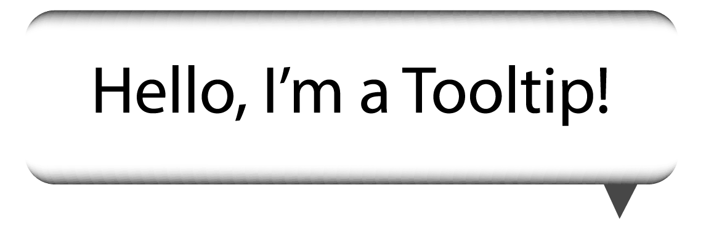

by Ashley Kodya
a jQuery plugin that helps designers quickly create professional Tooltips
Created to be flexible, allows you to create and customize easily, as well as override certain default functions if necessary. Also allows you to easily update content contained within the tooltip and easy to relocate code within your document.
Tooltipster allows you to create custom tooltips using AJAX data that is cached for when tooltip appears.
i.e. the last song listened to on Spotify
This plugin offers many options you'd add into JQuery code
You add customized options within the JQuery code
The designer is able to set how the tooltipster appears onto the page.
You can choose animations such as: fade, grow, swing, slide or fall
Sets the content within the tooltip.
This can be a string, JQuery content or by using html code contained within a string
Sets where the tooltip is positioned in relation to the item
The position can be set to:
right, left, top, top-right/left, bottom-right/left
Position can be tweaked by offsetX/offsetY tag
There are a few themes to choose from for tooltips
The themes are:
Default, Light, Punk, Noir, Shadow
You change the theme by using the tag iconTheme: "tooltipster-default";
The user also has the ability to create there own themes and load them onto the tooltip
arrow - gives your tooltip an arrow that creates a speech bubble effect
autoClose - decides whether tooltip automatically closes or not
debug - helps you resolve errors within tooltip coding
contentAsHTML - allows your content value to be set as either string
or interpreted as html code
hideOnClick - decides whether your tooltip closes when you click or auto closes
positionTracker - if the item with the tooltip moves, then the tooltip moves
interactive - allows user to interact with tooltip
multiple - allows you setup multiple tooltips on one item
onlyOne - sets the tooltip to be the only one open at a time
touchDevices - disables tooltips for touch devices
updateAnimation - animates tooltip when content has been updated
delay - stops the tooltip from animating by the amount of time in milliseconds
minWidth/maxWidth - sets min/max width of tooltip
interactiveTolerance - sets amount of time user has to hover over item before tooltip appears
offsetX/offsetY - sets distance from default origin of tooltip in pixels
speed - sets speed of the tooltip's animation
timer - sets how long the tooltip will show
functionInit - loads function once tooltip loads and if returns value, the value becomes the toooltip
functionBefore - function loads before tooltip opens and affects if and how the tooltip loads
functionReady - loads function when tooltip and it's content are added to the DOM
functionAfter - oads function after tooltip is closed and removed from DOM
<!DOCTYPE html>
<html>
<head>
<link rel="stylesheet" type="text/css" href="tooltipster-master/css/tooltipster.css" />
<link rel="stylesheet" type="text/css" href="css/style.css" />
<link href='https://fonts.googleapis.com/css?family=Open+Sans:400italic,700italic,400,700' rel='stylesheet' type='text/css'>
<link href='https://fonts.googleapis.com/css?family=Quicksand:400,700,400italic,700italic' rel='stylesheet' type='text/css'>
<script type="text/javascript" src="http://code.jquery.com/jquery-1.7.0.min.js"></script>
<script type="text/javascript" src="tooltipster-master/js/jquery.tooltipster.min.js"></script>
<!-- activates tooltipster 1 -->
<script>
/* $(document).ready(function() {
$('.tooltip').tooltipster();
});
*/
// ----------------------------------------------------------------------
// add image and text to tooltip by using JQuery objects 2
/* $(document).ready(function() {
$('.tooltip').tooltipster({
content: $('<span><img src="images/dog.png" /> <strong>OMG, I'm a Tooltip</strong></span>'),
theme: "tooltipster-noir"
});
});
*/
// ----------------------------------------------------------------------
// images with link and options 3
$(document).ready(function() {
$('.tooltip').tooltipster({
content: $('<span><img src="images/dog.png" /><a href="pitbulls.org">Setup links in tooltips</a></span>'),
animation: 'grow',
delay: 200,
theme: 'tooltipster-shadow',
touchDevices: false,
autoClose: true,
trigger: 'hover',
interactive: true,
speed: 1000,
position: "bottom-right"
});
});
// ----------------------------------------------------------------------
//creating multiple tool tips on one item
/* $(document).ready(function() {
var tooltipsterObjects = $('.tooltip').tooltipster({
content: 'Oh, here's another toolip',
multiple: true,
position: 'top-left',
animation: "fall",
speed: 200,
});
var tooltip1 = tooltipsterObjects[0];
tooltip1.content('first tool tip').show();
var tooltipsterObjects = $('.tooltip').tooltipster({
// don't forget to provide content here as the 1st tooltip will have deleted the original title attribute of the element
content: '...and ...another ...tooltip',
multiple: true,
position: 'bottom-right',
animation: "fall",
speed: 2000,
});
// since the jQuery selector matches only one element, the array will contain only one Tooltipster object.
// Otherwise the array would contain one object for each matched element, in the same order as them
var tooltip2 = tooltipsterObjects[0];
// use this Tooltipster object to make any API method call on the tooltip
tooltip2.content('...and another').show();
// all documented methods can be called that way
var element = tooltip2.elementTooltip();
// calling the API methods in the usual way only affects the first tooltip that was created on the element
$('.tooltip').tooltipster('Oh, here's another toolip', '...and ...another ...tooltip')
}); */
</script>
</head>
<body>
<h1>My Tooltipster Example</h1>
<section>
<article>
<!-- adding a tooltip to an image -->
<p>add a tool tip to an image<p>
<img src="images/bear.png" id="bear" class="tooltip" title="Give me a class of 'tooltip'" />
</article>
<article>
<!-- adding a tooltip to a link with class already assigned -->
<p>link already has class<p>
<a href="http://fullsail.edu" class="link tooltip" title="Add the word 'tooltip' to the end of the link's class">This link already has a class...</a>
</article>
<article>
<!-- adding a tooltip to a div -->
<p>add tooltip to a div<p>
<div id="divexample" class="tooltip" title="Give the div a class of tooltip">This is a div and it needs a tooltip!</div>
</article>
</body>
</html>
Click here for my example of Tooltipster!